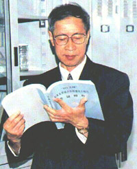

快速入口更多 >>
闻邦椿 中国科学院院士

闻邦椿，原籍浙江温岭，1930年9月生于浙江省杭州市。1957年东北工学院机械系研究生毕业。现为东北大学机械工程与自动化学院教授，机械设计及理论研究所名誉所长。IFToMM(国际机器理论与机构学联合会)中国委员会委员，国际转子动力学技术委员会委员，亚太振动会议指导委员会委员，中国振动工程学会名誉理事长。曾任第六、七、八、九届全国政协委员，国务院学位委员会第二、三、四届机械工程学科评议组成员，中国振动工程学会理事长和《振动工程学报》主编、上海交通大学“振动、冲击、噪声”国家重点实验室学术委员会主任。1984年被评为全国第一批有突出贡献的中青年专家，1991年当选为中国科学院院士（学部委员）。
他系统地研究和发展了振动学与机器学相结合的新学科“振动利用工程学”。还研究了转子动力学、机械系统非线性振动理论及应用、机械故障的振动诊断、综合设计理论、机电一体化以及工程机械理论的某些问题。发表论文700余篇，撰写专著和主编的论文集28部。
他指导了100余名研究生，已有87名研究生取得了硕士学位，61名研究生取得了博士学位，还曾指导博士后10名、俄罗斯和哈萨克斯坦访问学者各一名。
他完成了数十项国家和横向重大科研项目，包括国家自然科学基金重大项目、面上项目和973、863项目等，曾获国际奖2项，国家奖4项，省、部、委级奖15项，国家专利9项。有多项成果达到国际先进水平，取得了重大经济效益和社会效益。